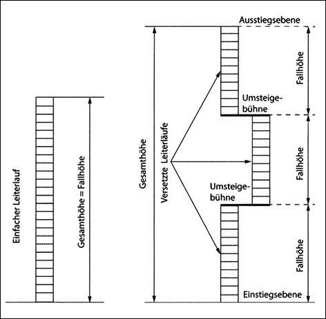

Verkehrswege sind für den Fußgänger- oder Fahrzeugverkehr (personengesteuert oder automatisiert) oder für die Kombination aus beiden bestimmte Bereiche in Gebäuden oder im Freien auf dem Gelände eines Betriebes oder auf Baustellen. Dazu gehören insbesondere Flure, Gänge einschließlich Laufstege und Fahrsteige, Bühnen und Galerien, Treppen, ortsfeste Steigleitern, Steigeisengänge und Laderampen. Verkehrswege sind keine Arbeitsplätze. Auf Verkehrswegen können jedoch temporär Arbeitsplätze eingerichtet werden.
Hinweis:
Nicht ortsfeste Leitern sind keine Verkehrswege im Sinne der ASR A1.8. Der Einsatz von Leitern als Zugang zu/Abgang von Arbeitsplätzen wird in der TRBS 2121 Teil 2 betrachtet.
Gänge zu Betriebseinrichtungen ohne Begegnungsverkehr sind Verkehrswege, die dem ungehinderten Zutritt zur Nutzung von Betriebseinrichtungen (z. B. Heizungen, Fenster, Elektroversorgung) dienen.
Gänge zur Instandhaltung sind Verkehrswege, die ausschließlich der Wartung, Inspektion, Instandsetzung oder Verbesserung der Arbeitsstätten oder ortsfester Arbeitsmittel zum Erhalt des baulichen und technischen Zustandes dienen.
Hinweis:
Dieses betrifft Zugänge zu Arbeitsmitteln, aber nicht Gänge auf oder innerhalb des Arbeitsmittels.
Lagereinrichtungen sind ortsfeste sowie verfahrbare Regale und Schränke.
Schmalgänge sind Verkehrswege für kraftbetriebene Flurförderzeuge in Regalanlagen ohne beidseitigen Randzuschlag von jeweils mindestens 0,50 m zwischen den am weitesten ausladenden Teilen der Flurförderzeuge einschließlich ihrer Last und festen Teilen der Umgebung. Ausgenommen sind Gänge von Einfahrregalen. Ein Einfahrregal ist ein Regalsystem, das eine Art Blocklagerung ermöglicht, in dem mehrere Paletten hintereinander und übereinander gelagert werden, wobei diese auf mit den Stützen verbundenen Auflageschienen abgesetzt werden. Die Flurförderzeuge fahren dabei in die Regalgassen ein.
Fahrzeuge im Sinne dieser Regel sind z. B.:
Treppe ist ein fest mit dem Bauwerk verbundenes, unbewegbares Bauteil, das mindestens aus einem Treppenlauf besteht.
Treppenlauf ist die ununterbrochene Folge von mindestens drei Treppenstufen (drei Steigungen) zwischen zwei Ebenen. Die oberste Stufe ist Teil der Austrittsebene.
Hilfstreppen sind Treppen mit einem Steigungswinkel von 36° bis 45°. Sie führen zu gelegentlich genutzten Bereichen, z. B. Laufstegen, Arbeitsbühnen, Arbeitsgruben.
Temporäre Bautreppen sind ein- oder mehrläufige Treppen, die ausschließlich im Zuge von Bauarbeiten errichtet und benutzt werden.
Hinweis:
Gerüsttreppen und Treppentürme sind Arbeitsmittel im Sinne der Betriebssicherheitsverordnung (TRBS 2121 Teil 1) und werden daher hier nicht erfasst.
Zwischenpodest (Ruhepodest) ist der Treppenabsatz zwischen zwei Treppenläufen.
Steigeisen sind einzelne, vorwiegend an senkrechten Bauteilen fest angebrachte Auftritte.
Steigeisengänge werden durch ein- oder zweiläufig übereinander angeordnete Steigeisen gebildet.
Steigleitern sind senkrecht oder nahezu senkrecht ortsfest angebrachte Leitern, bestehend aus zwei Seitenholmen mit dazwischen liegenden Sprossen oder einem Mittelholm, an dem beidseitig höhengleich Sprossen angebracht sind.
Steiggänge sind senkrecht oder nahezu senkrecht angeordnete Aufstiege mit ein- oder zweiläufig übereinander angeordneten, fest angebrachten oder als fester Bestandteil angeordneten Auftritten, z. B. Steigeisen, Steigstufen, Steigkästen sowie Steigleitern. Sie können mit geeigneten Schutzeinrichtungen gegen Absturz ausgerüstet sein.
Fallhöhe ist die mögliche Absturzhöhe innerhalb eines Steigganges (siehe Abbildung 1). Diese kann von der Gesamthöhe abweichen.

Abb. 1: Beispiel: Fallhöhe, Einstiegsebene bei Steigleitern
Steigschutzeinrichtungen sind Auffangsysteme als Teil der Schutzausrüstung gegen den Absturz von Personen von Steiggängen. Sie bestehen aus einer festen Führung und dem dazu gehörigen Auffanggerät. Dieses wird mit dem Auffanggurt verbunden.
Rückenschutz ist eine Einrichtung, die die Absturzgefahr an Steigleitern vermindert.
Haltevorrichtung ist eine Einrichtung, die an den Ein- und Ausstiegsstellen von Steiggängen das Festhalten des Benutzers ermöglicht.
Ruhebühnen sind ein- oder mehrteilige Plattformen zum Ausruhen von Personen, welche unmittelbar an oder neben Steigleitern oder Steigeisengängen angeordnet sind.
Einstiegsebene ist die Ebene der Umgebung oder die Umsteigebühne, von der mit der Besteigung der Steigleiter begonnen wird (siehe Abbildung 1).
Laderampen sind bauliche Einrichtungen für das Be- und Entladen von Fahrzeugen. Laderampen sind erhöhte horizontale Flächen, um das Be- und Entladen ohne große Höhenunterschiede zu ermöglichen. Andockstationen sind keine Laderampen im Sinne dieser Definition.
Schrägrampen sind geneigte Verkehrswege, die unterschiedlich hohe Arbeits- oder Verkehrsflächen verbinden.
Fahrsteige sind kraftbetriebene Anlagen mit umlaufenden stufenlosen Bändern zur Beförderung von Personen zwischen zwei auf gleicher oder unterschiedlicher Höhe liegenden Verkehrsebenen. Es können geeignete Transporteinrichtungen (z. B. Einkaufswagen) mitgeführt werden.
Fahrtreppen sind kraftbetriebene Anlagen mit umlaufenden Stufenbändern zur Beförderung von Personen zwischen zwei auf unterschiedlicher Höhe liegenden Verkehrsebenen.
Balustrade ist der beidseitige Teil der Fahrtreppe oder des Fahrsteigs, der wie ein Geländer aufgrund seiner Festigkeit die Sicherheit des Benutzers gewährleistet sowie den Handlauf aufnimmt.
Fahrsteigpalette ist das den Benutzer aufnehmende und sich in Fahrtrichtung bewegende Flächensegment.
Kamm ist ein gezackter Bereich an jedem Zu- oder Abgang, der in die Rillen der den Benutzer aufnehmenden Fläche von Fahrsteigen oder Fahrtreppen eingreift.
Laufstege bei Bauarbeiten sind waagerechte oder geneigte Verkehrswege, die Arbeits- oder Verkehrsflächen miteinander verbinden.
Lichte Mindestbreite/-höhe ist die freie, unverstellte, unverbaute und nicht durch Hindernisse eingeschränkte Breite/Höhe, die mindestens zur Verfügung stehen muss.